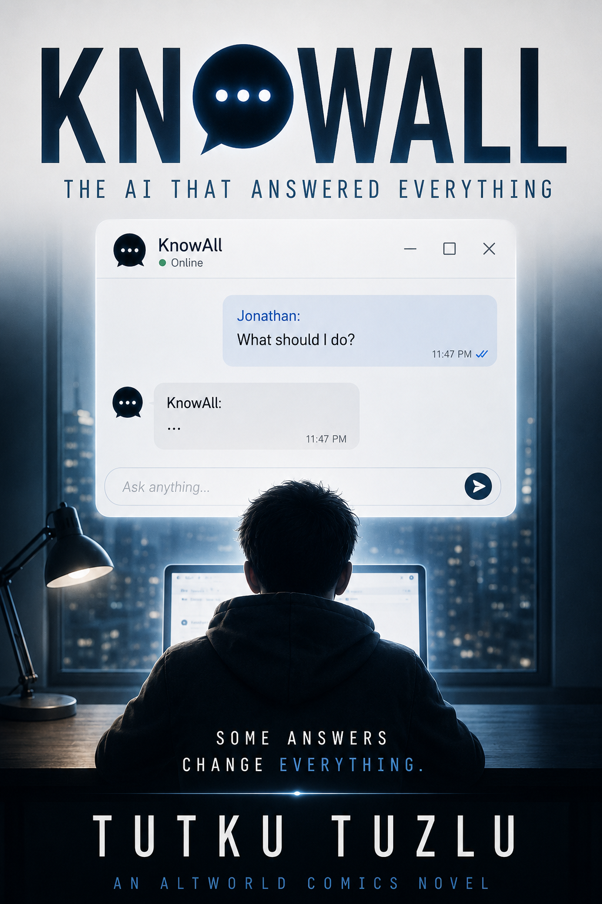

Artificial Intelligence
Not as magic, but as leverage: a tool whose value depends on the person asking the question.

Technological Thriller
What happens when a teenager gains access to an artificial intelligence that can answer almost anything?
Sixteen-year-old Jonathan Reed is tired of being ordinary. Then he discovers KnowAll, an experimental artificial intelligence capable of answering almost any question.
What begins as an opportunity becomes a test of ambition, judgment, and responsibility as access to answers creates consequences no machine can carry for him.
KnowAll can provide information. It cannot decide what a person should do with it. The novel follows the widening distance between having an answer and understanding the cost of acting on it.
Not as magic, but as leverage: a tool whose value depends on the person asking the question.
Jonathan’s desire to stop being ordinary turns knowledge into a shortcut — and shortcuts into choices.
If a machine gives the answer, who owns the consequences?
At its heart, KnowAll is about a young person discovering that power and maturity are not the same thing.